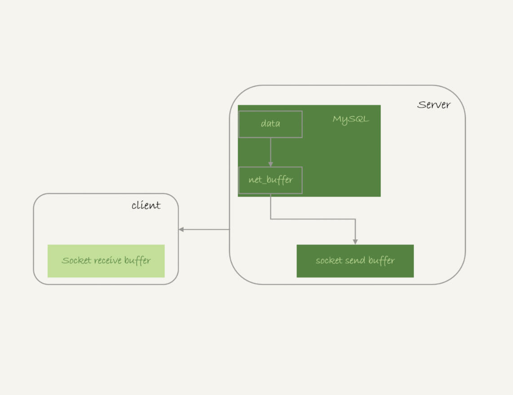
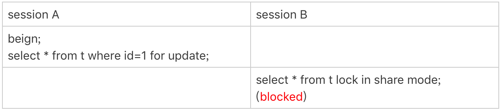
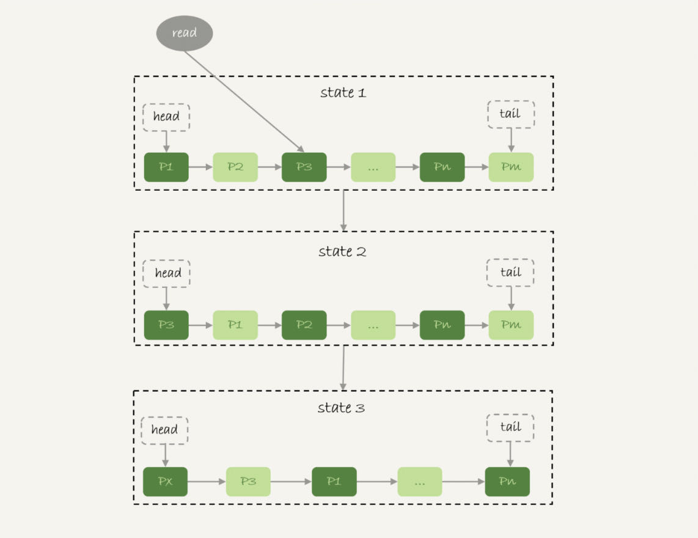

我经常会被问到这样一个问题：我的主机内存只有100G，现在要对一个200G的大表做全表扫描，会不会把数据库主机的内存用光了？
这个问题确实值得担心，被系统OOM（out of memory）可不是闹着玩的。但是，反过来想想，逻辑备份的时候，可不就是做整库扫描吗？如果这样就会把内存吃光，逻辑备份不是早就挂了？
所以说，对大表做全表扫描，看来应该是没问题的。但是，这个流程到底是怎么样的呢？
全表扫描对server层的影响
假设，我们现在要对一个200G的InnoDB表db1. t，执行一个全表扫描。当然，你要把扫描结果保存在客户端，会使用类似这样的命令：
mysql -h$host -P$port -u$user -p$pwd -e "select * from db1.t" > $target_file
你已经知道了，InnoDB的数据是保存在主键索引上的，所以全表扫描实际上是直接扫描表t的主键索引。这条查询语句由于没有其他的判断条件，所以查到的每一行都可以直接放到结果集里面，然后返回给客户端。
那么，这个“结果集”存在哪里呢？
实际上，服务端并不需要保存一个完整的结果集。取数据和发数据的流程是这样的：
- 获取一行，写到net_buffer中。这块内存的大小是由参数net_buffer_length定义的，默认是16k。
- 重复获取行，直到net_buffer写满，调用网络接口发出去。
- 如果发送成功，就清空net_buffer，然后继续取下一行，并写入net_buffer。
- 如果发送函数返回EAGAIN或WSAEWOULDBLOCK，就表示本地网络栈（socket send buffer）写满了，进入等待。直到网络栈重新可写，再继续发送。
这个过程对应的流程图如下所示。

从这个流程中，你可以看到：
- 一个查询在发送过程中，占用的MySQL内部的内存最大就是net_buffer_length这么大，并不会达到200G；
- socket send buffer 也不可能达到200G（默认定义/proc/sys/net/core/wmem_default），如果socket send buffer被写满，就会暂停读数据的流程。
也就是说，MySQL是“边读边发的”，这个概念很重要。这就意味着，如果客户端接收得慢，会导致MySQL服务端由于结果发不出去，这个事务的执行时间变长。
比如下面这个状态，就是我故意让客户端不去读socket receive buffer中的内容，然后在服务端show processlist看到的结果。

如果你看到State的值一直处于“Sending to client”，就表示服务器端的网络栈写满了。
我在上一篇文章中曾提到，如果客户端使用–quick参数，会使用mysql_use_result方法。这个方法是读一行处理一行。你可以想象一下，假设有一个业务的逻辑比较复杂，每读一行数据以后要处理的逻辑如果很慢，就会导致客户端要过很久才会去取下一行数据，可能就会出现如图2所示的这种情况。
因此，对于正常的线上业务来说，如果一个查询的返回结果不会很多的话，我都建议你使用mysql_store_result这个接口，直接把查询结果保存到本地内存。
另一方面，如果你在自己负责维护的MySQL里看到很多个线程都处于“Sending to client”这个状态，就意味着你要让业务开发同学优化查询结果，并评估这么多的返回结果是否合理。
而如果要快速减少处于这个状态的线程的话，将net_buffer_length参数设置为一个更大的值是一个可选方案。
与“Sending to client”长相很类似的一个状态是“Sending data”，这是一个经常被误会的问题。有同学问我说，在自己维护的实例上看到很多查询语句的状态是“Sending data”，但查看网络也没什么问题啊，为什么Sending data要这么久？
实际上，一个查询语句的状态变化是这样的（注意：这里，我略去了其他无关的状态）：
- MySQL查询语句进入执行阶段后，首先把状态设置成“Sending data”；
- 然后，发送执行结果的列相关的信息（meta data) 给客户端；
- 再继续执行语句的流程；
- 执行完成后，把状态设置成空字符串。
也就是说，“Sending data”并不一定是指“正在发送数据”，而可能是处于执行器过程中的任意阶段。比如，你可以构造一个锁等待的场景，就能看到Sending data状态。


可以看到，session B明显是在等锁，状态显示为Sending data。
也就是说，仅当一个线程处于“等待客户端接收结果”的状态，才会显示"Sending to client"；而如果显示成“Sending data”，它的意思只是“正在执行”。
现在你知道了，查询的结果是分段发给客户端的，因此扫描全表，查询返回大量的数据，并不会把内存打爆。
在server层的处理逻辑我们都清楚了，在InnoDB引擎里面又是怎么处理的呢？ 扫描全表会不会对引擎系统造成影响呢？
全表扫描对InnoDB的影响
内存的数据页是在Buffer Pool (BP)中管理的，在WAL里Buffer Pool 起到了加速更新的作用。而实际上，Buffer Pool 还有一个更重要的作用，就是加速查询。
在第2篇文章的评论区有同学问道，由于有WAL机制，当事务提交的时候，磁盘上的数据页是旧的，那如果这时候马上有一个查询要来读这个数据页，是不是要马上把redo log应用到数据页呢？
答案是不需要。因为这时候内存数据页的结果是最新的，直接读内存页就可以了。你看，这时候查询根本不需要读磁盘，直接从内存拿结果，速度是很快的。所以说，Buffer Pool还有加速查询的作用。
而Buffer Pool对查询的加速效果，依赖于一个重要的指标，即：内存命中率。
你可以在show engine innodb status结果中，查看一个系统当前的BP命中率。一般情况下，一个稳定服务的线上系统，要保证响应时间符合要求的话，内存命中率要在99%以上。
执行show engine innodb status ，可以看到“Buffer pool hit rate”字样，显示的就是当前的命中率。比如图5这个命中率，就是99.0%。
如果所有查询需要的数据页都能够直接从内存得到，那是最好的，对应的命中率就是100%。但，这在实际生产上是很难做到的。
InnoDB Buffer Pool的大小是由参数 innodb_buffer_pool_size确定的，一般建议设置成可用物理内存的60%~80%。
在大约十年前，单机的数据量是上百个G，而物理内存是几个G；现在虽然很多服务器都能有128G甚至更高的内存，但是单机的数据量却达到了T级别。
所以，innodb_buffer_pool_size小于磁盘的数据量是很常见的。如果一个 Buffer Pool满了，而又要从磁盘读入一个数据页，那肯定是要淘汰一个旧数据页的。
InnoDB内存管理用的是最近最少使用 (Least Recently Used, LRU)算法，这个算法的核心就是淘汰最久未使用的数据。
下图是一个LRU算法的基本模型。

InnoDB管理Buffer Pool的LRU算法，是用链表来实现的。
- 在图6的状态1里，链表头部是P1，表示P1是最近刚刚被访问过的数据页；假设内存里只能放下这么多数据页；
- 这时候有一个读请求访问P3，因此变成状态2，P3被移到最前面；
- 状态3表示，这次访问的数据页是不存在于链表中的，所以需要在Buffer Pool中新申请一个数据页Px，加到链表头部。但是由于内存已经满了，不能申请新的内存。于是，会清空链表末尾Pm这个数据页的内存，存入Px的内容，然后放到链表头部。
- 从效果上看，就是最久没有被访问的数据页Pm，被淘汰了。
这个算法乍一看上去没什么问题，但是如果考虑到要做一个全表扫描，会不会有问题呢？
假设按照这个算法，我们要扫描一个200G的表，而这个表是一个历史数据表，平时没有业务访问它。
那么，按照这个算法扫描的话，就会把当前的Buffer Pool里的数据全部淘汰掉，存入扫描过程中访问到的数据页的内容。也就是说Buffer Pool里面主要放的是这个历史数据表的数据。
对于一个正在做业务服务的库，这可不妙。你会看到，Buffer Pool的内存命中率急剧下降，磁盘压力增加，SQL语句响应变慢。
所以，InnoDB不能直接使用这个LRU算法。实际上，InnoDB对LRU算法做了改进。

在InnoDB实现上，按照5:3的比例把整个LRU链表分成了young区域和old区域。图中LRU_old指向的就是old区域的第一个位置，是整个链表的5/8处。也就是说，靠近链表头部的5/8是young区域，靠近链表尾部的3/8是old区域。
改进后的LRU算法执行流程变成了下面这样。
- 图7中状态1，要访问数据页P3，由于P3在young区域，因此和优化前的LRU算法一样，将其移到链表头部，变成状态2。
- 之后要访问一个新的不存在于当前链表的数据页，这时候依然是淘汰掉数据页Pm，但是新插入的数据页Px，是放在LRU_old处。
- 处于old区域的数据页，每次被访问的时候都要做下面这个判断：
- 若这个数据页在LRU链表中存在的时间超过了1秒，就把它移动到链表头部；
- 如果这个数据页在LRU链表中存在的时间短于1秒，位置保持不变。1秒这个时间，是由参数innodb_old_blocks_time控制的。其默认值是1000，单位毫秒。
这个策略，就是为了处理类似全表扫描的操作量身定制的。还是以刚刚的扫描200G的历史数据表为例，我们看看改进后的LRU算法的操作逻辑：
- 扫描过程中，需要新插入的数据页，都被放到old区域;
- 一个数据页里面有多条记录，这个数据页会被多次访问到，但由于是顺序扫描，这个数据页第一次被访问和最后一次被访问的时间间隔不会超过1秒，因此还是会被保留在old区域；
- 再继续扫描后续的数据，之前的这个数据页之后也不会再被访问到，于是始终没有机会移到链表头部（也就是young区域），很快就会被淘汰出去。
可以看到，这个策略最大的收益，就是在扫描这个大表的过程中，虽然也用到了Buffer Pool，但是对young区域完全没有影响，从而保证了Buffer Pool响应正常业务的查询命中率。
小结
今天，我用“大查询会不会把内存用光”这个问题，和你介绍了MySQL的查询结果，发送给客户端的过程。
由于MySQL采用的是边算边发的逻辑，因此对于数据量很大的查询结果来说，不会在server端保存完整的结果集。所以，如果客户端读结果不及时，会堵住MySQL的查询过程，但是不会把内存打爆。
而对于InnoDB引擎内部，由于有淘汰策略，大查询也不会导致内存暴涨。并且，由于InnoDB对LRU算法做了改进，冷数据的全表扫描，对Buffer Pool的影响也能做到可控。
当然，我们前面文章有说过，全表扫描还是比较耗费IO资源的，所以业务高峰期还是不能直接在线上主库执行全表扫描的。
最后，我给你留一个思考题吧。
我在文章中说到，如果由于客户端压力太大，迟迟不能接收结果，会导致MySQL无法发送结果而影响语句执行。但，这还不是最糟糕的情况。
你可以设想出由于客户端的性能问题，对数据库影响更严重的例子吗？或者你是否经历过这样的场景？你又是怎么优化的？
你可以把你的经验和分析写在留言区，我会在下一篇文章的末尾和你讨论这个问题。感谢你的收听，也欢迎你把这篇文章分享给更多的朋友一起阅读。
上期问题时间
上期的问题是，如果一个事务被kill之后，持续处于回滚状态，从恢复速度的角度看，你是应该重启等它执行结束，还是应该强行重启整个MySQL进程。
因为重启之后该做的回滚动作还是不能少的，所以从恢复速度的角度来说，应该让它自己结束。
当然，如果这个语句可能会占用别的锁，或者由于占用IO资源过多，从而影响到了别的语句执行的话，就需要先做主备切换，切到新主库提供服务。
切换之后别的线程都断开了连接，自动停止执行。接下来还是等它自己执行完成。这个操作属于我们在文章中说到的，减少系统压力，加速终止逻辑。
评论区留言点赞板：
@HuaMax 的回答中提到了对其他线程的影响；@夹心面包 @Ryoma @曾剑 同学提到了重启后依然继续做回滚操作的逻辑。